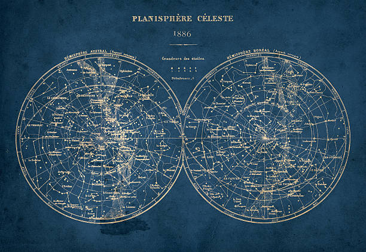

Astrometry is a branch of astronomy that deals with the precise measurement of the positions and motions of celestial objects, such as stars, planets, and galaxies. It involves the use of telescopes and other instruments to make precise measurements of angles and distances. Astrometry plays a crucial role in determining the orbits of celestial objects, studying the structure and evolution of the Milky Way galaxy, searching for extrasolar planets, and studying the distribution of dark matter in the universe.
What is Astrometry?
Ancient Astrometry
Ancient astrometry refers to the study of the positions and motions of celestial objects in ancient times, before the development of modern instruments and techniques. Ancient cultures, such as the Babylonians, Egyptians, Greeks, and Chinese, made observations of the stars and planets, and developed systems of astronomy and astrology based on these observations. They used techniques such as naked-eye observation, geometric calculations, and astronomical instruments such as sundials and astrolabes. Ancient astrometry played a crucial role in the development of early calendars, navigation, and religious beliefs. Today, we can still study and learn from the astrometry of ancient cultures and their contributions to the field of astronomy.
Modern Astrometry

Modern astrometry is the study of the precise measurement of the positions and motions of celestial objects using advanced instruments and techniques. Modern astrometry includes the use of telescopes equipped with high-resolution cameras, interferometers, and space-based observatories. This field of study plays a crucial role in determining the orbits of celestial objects, searching for exoplanets, studying the structure and evolution of our Milky Way galaxy and other galaxies, and providing data for astronomical navigation and timekeeping. Modern astrometry has also contributed significantly to our understanding of the universe's structure and evolution and provided insights into the distribution and nature of dark matter in the universe.